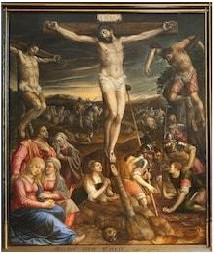

In Luke, one of the bandits repents. The Synoptic Gospels have Simon of Cyrene carrying Jesus’ cross, but John says he bears it himself (John 19:17); furthermore, the Synoptic Gospels have Jesus being crucified on the day after the Passover meal (Last Supper), while John, for poetic effect, has Jesus die as the lambs are being killed for the meal.

Mt 27:32 And as they came out, they found a man of Cyrene, Simon by name: him they compelled to bear his cross. 27:33 And when they were come unto a place called Golgotha, that is to say, a place of a skull, 27:34 They gave him vinegar to drink mingled with gall: and when he had tasted thereof, he would not drink. 27:35 And they crucified him, and parted his garments, casting lots: that it might be fulfilled which was spoken by the prophet, They parted my garments among them, and upon my vesture did they cast lots. 27:36 And sitting down they watched him there; 27:37 And set up over his head his accusation written, THIS IS JESUS THE KING OF THE JEWS. 27:38 Then were there two thieves crucified with him, one on the right hand, and another on the left. 27:39 And they that passed by reviled him, wagging their heads, 27:40 And saying, Thou that destroyest the temple, and buildest it in three days, save thyself. If thou be the Son of God, come down from the cross. 27:41 Likewise also the chief priests mocking him, with the scribes and elders, said, 27:42 He saved others; himself he cannot save. If he be the King of Israel, let him now come down from the cross, and we will believe him. 27:43 He trusted in God; let him deliver him now, if he will have him: for he said, I am the Son of God. 27:44 The thieves also, which were crucified with him, cast the same in his teeth.
~~~~~~~